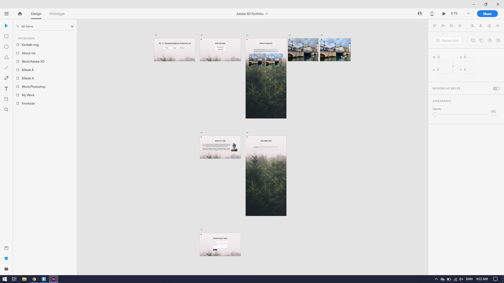
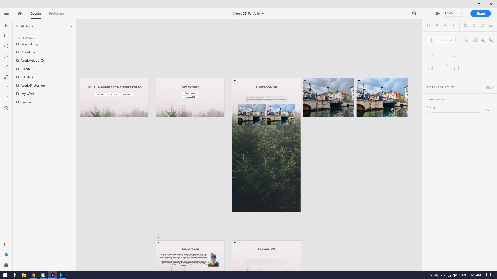
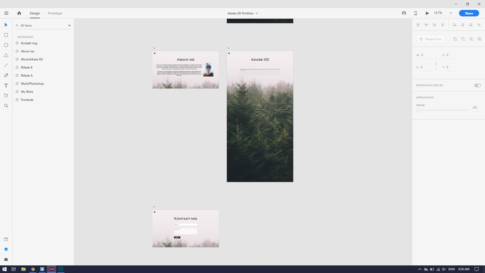

Home
Projects
Photoshop
Adobe XD
HTML, CSS, JavaScript
About
Contact



Dette var min første udkast på denne hjemmeside, den var lavet i Adobe XD. Programmet kan bruges til at lave prototype til apps, hjemmesider, osv. i dette tilfælde er den en hjemmeside som jeg har taget screenshots af.